Data understanding is a fundamental and critical step in the field of data science and analytics. It serves as the foundation upon which all subsequent data-related activities are built. This process involves the exploration, examination, and comprehension of the data at hand, enabling organizations and individuals to derive valuable insights, make informed decisions, and solve complex problems. Moreover, data understanding allows us to uncover patterns, trends, and relationships.
The original dataset comprises 70,000 patient records, containing 11 predictive variables (features) and 1 response variable (target). Body Mass Index (BMI) has been included in the dataset due to its significance as a factor that can be used to estimate an individual’s body fat and, by extension, assess their health in relation to their weight. It serves as a valuable tool for quickly evaluating health risks associated with weight. Therefore, we now have 12 features.
Physical activity | Subjective Feature | active | binary |
Body Mass Index | Objective Feature | bmi | float (kg/m²)|
Presence or absence of cardiovascular disease | Target Variable | cardio | binary |
The problem I am addressing involves understanding the potential risk factors associated with cardiovascular diseases.
In the dataset, there are six numerical features: Age, Height, Weight, Systolic blood pressure (ap_hi), Diastolic blood pressure (ap_lo), and Body Mass Index (BMI). Additionally, there are seven categorical features: Gender, Cholesterol, Glucose, Smoking, Alcohol intake, Physical activity, and the presence or absence of cardiovascular disease (the Target Variable).
Identifying potential relationships and their relevance to the project’s objectives is a crucial step in data analysis and modeling. These relationships will be explored through visualization methods, such as correlation matrices, histograms, scatterplots, etc.
Code
import pandas as pdimport seaborn as snsimport matplotlib.pyplot as pltimport numpy as npcardio = pd.read_csv('../Data/01-modified-data/cardio.csv')cardio['bmi'] =round(cardio['weight'] / ((cardio['height']/100) **2),2)cardio.head()
id
age
gender
height
weight
ap_hi
ap_lo
cholesterol
gluc
smoke
alco
active
cardio
bmi
0
0
50
2
168
62
110
80
1
1
0
0
1
0
21.97
1
1
55
1
156
85
140
90
3
1
0
0
1
1
34.93
2
2
52
1
165
64
130
70
3
1
0
0
0
1
23.51
3
3
48
2
169
82
150
100
1
1
0
0
1
1
28.71
4
4
48
1
156
56
100
60
1
1
0
0
0
0
23.01
Descriptive Statstics
Descriptive statistics serve as a fundamental tool for understanding and summarizing data, offering valuable insights into the characteristics of a dataset. In this analysis, the focus is on both numerical and categorical variables, each demanding specific methods to reveal crucial details.
The statistical summary report for numerical variables:
Code
import pandas as pdimport seaborn as snsimport matplotlib.pyplot as pltimport numpy as npcardio = pd.read_csv('../Data/01-modified-data/cardio.csv')cardio['bmi'] =round(cardio['weight'] / ((cardio['height']/100) **2),2)cardio.head()# Select numerical columnsnumerical_cols = ["age", "height", "weight", "ap_hi", "ap_lo", "bmi"]stats = {'Mean': cardio[numerical_cols].mean(),'Median': cardio[numerical_cols].median(),'Mode': cardio[numerical_cols].mode().iloc[0],'Standard Deviation': cardio[numerical_cols].std(),'Variance': cardio[numerical_cols].var()}stats_df = pd.DataFrame(stats)print(stats_df)
For categorical variables, frequency distributions and bar charts are used to visualize data distribution:
Code
import pandas as pdimport seaborn as snsimport matplotlib.pyplot as pltimport numpy as npcardio = pd.read_csv('../Data/01-modified-data/cardio.csv')cardio['bmi'] =round(cardio['weight'] / ((cardio['height']/100) **2),2)cardio.head()categorical_vars = ["gender", "cholesterol", "gluc", "smoke", "alco", "active", "cardio"]for var in categorical_vars:print(f"Frequency distribution for {var}:\n")print(cardio[var].value_counts())print("\n"+"="*50+"\n")
Frequency distribution for gender:
gender
1 45530
2 24470
Name: count, dtype: int64
==================================================
Frequency distribution for cholesterol:
cholesterol
1 52385
2 9549
3 8066
Name: count, dtype: int64
==================================================
Frequency distribution for gluc:
gluc
1 59479
3 5331
2 5190
Name: count, dtype: int64
==================================================
Frequency distribution for smoke:
smoke
0 63831
1 6169
Name: count, dtype: int64
==================================================
Frequency distribution for alco:
alco
0 66236
1 3764
Name: count, dtype: int64
==================================================
Frequency distribution for active:
active
1 56261
0 13739
Name: count, dtype: int64
==================================================
Frequency distribution for cardio:
cardio
0 35021
1 34979
Name: count, dtype: int64
==================================================
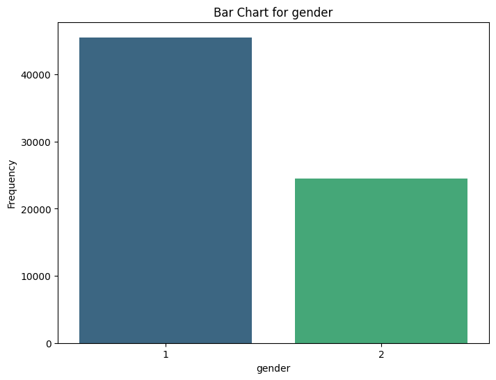
Gender
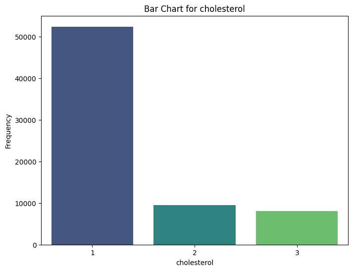
Cholesterol
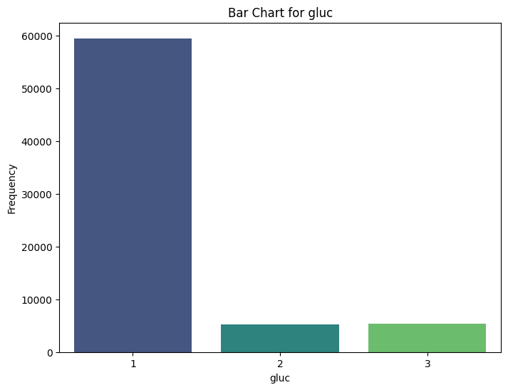
Gluc
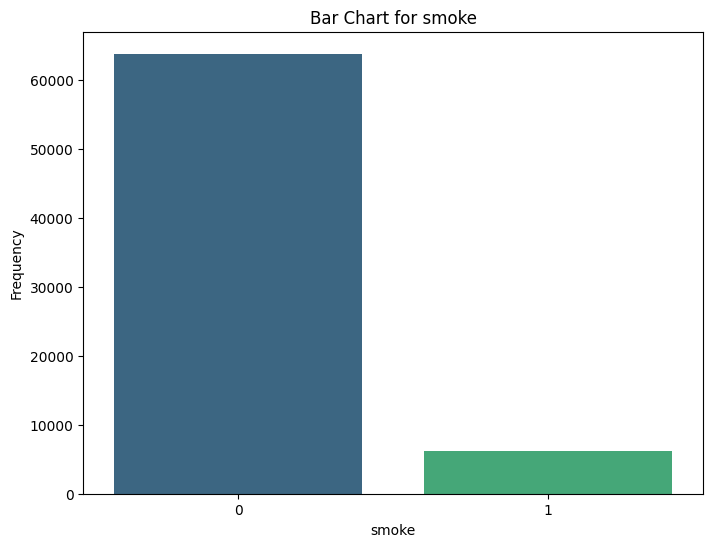
Smoke
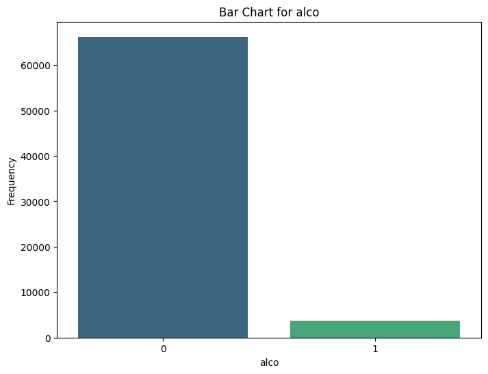
Alco
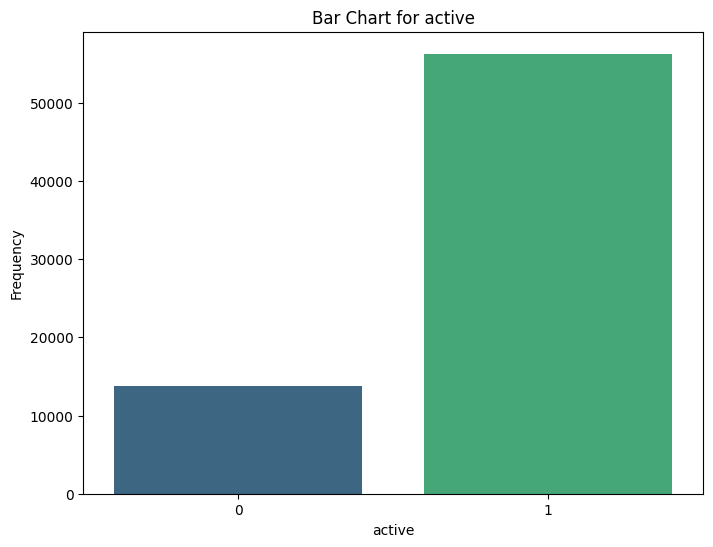
Active
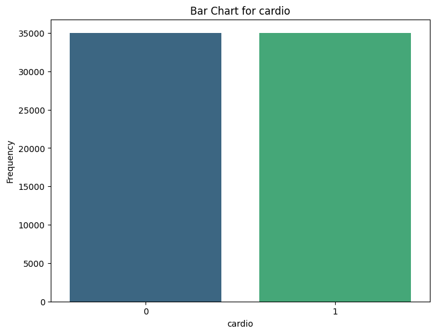
Cardio
Data Visualization
Visualizations, such as histograms, box plots, scatter plots, and heatmaps, serve as invaluable tools for unveiling data’s distribution, identifying relationships between variables, and detecting potential trends. These graphical representations simplify complex data, offering a clear and efficient means of interpretation, ultimately enhancing our ability to understand and leverage the insights hidden within the dataset.
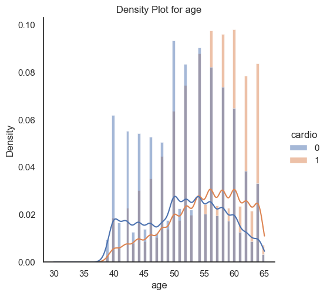
Age
A. The density plot for age suggests that a higher age of an individual is likely to be associated with cardiovascular dieases.
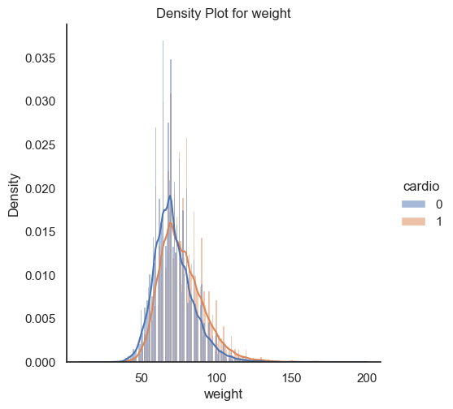
Weight
B. From the weight density plot in relation to cardio, the density curve for those with cardiovascular diseases is higher than that for those without, particularly for individuals with larger weights. This suggests that individuals with higher weights are more likely to have cardiovascular diseases.
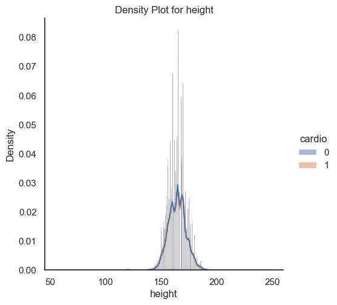
(i) Height
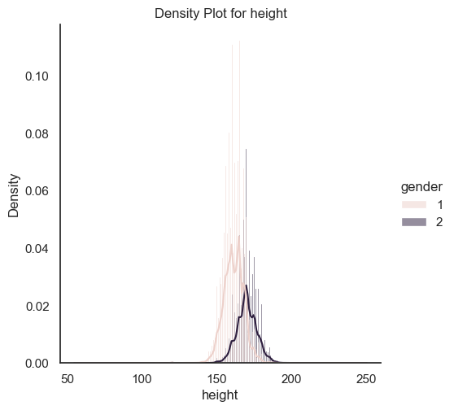
(ii) Height
C. (i) The first density plot indicates there is rarely an assciation between height and cardiovasucler dieases. (ii) The second density plot tells there is a relationsip between gender and height, but such variance does not result in any different on the response variable cardio.
Correlation Analysis
Examining the correlations between variables with correlation matrices provides a better understanding of the relationships within the data.
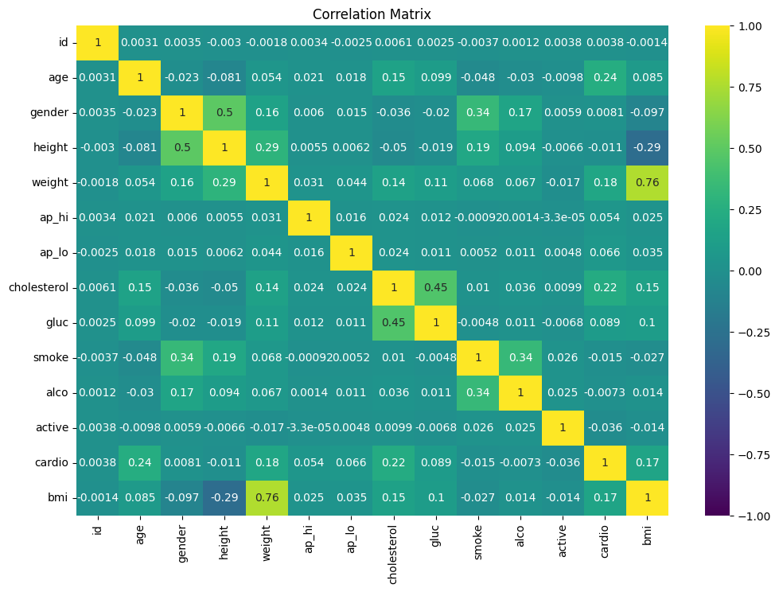
Correlation Matrix
Based on the correlation matrix, there is a relatively higher correlation between ‘height’ and ‘gender’, ‘gluc’ and ‘cholesterol’, and ‘alco’ and ‘smoke’.
Examining our response variable, ‘cardio’, we find that the variables with the highest correlations are ‘age’ (0.24), ‘weight’ (0.18), ‘cholesterol’ (0.22), and ‘bmi’ (0.17). These variables could be crucial features during the model training process.
Hypothesis Generation
Q1 Age: How old are you? (Cardiovascular risk generally increases with age.)
Answer: Age is a key factor in predicting cardiovascular diseases. Observing the age density plot, we see that a higher age tends to be associated with a higher probability of cardiovascular diseases.
Q2 Gender: Are you male or female? (Certain risk factors may vary by gender.)
Answer: Gender doesn’t seem to be a significant feature. There’s scarcely any difference in cardiovascular disease rates between males and females.
Q3 Family History: Does your family have a history of heart disease or related conditions?
Answer: It’s challenging to find datasets with family history, primarily due to the vast variations in individual family histories and the availability of such data.
Q4 Smoking: Do you currently smoke, or have you ever smoked in the past?
Answer: Based on the correlation matrix, smoking doesn’t appear to be an important feature in the current Exploratory Data Analysis (EDA) results.
Q5 Physical Activity: How often do you engage in physical activity or exercise?
Answer: Physical activity is a feature in the dataset. Based on the correlation matrix, its correlation with other variables is almost zero. Given its binary nature, it’s a more subjective feature, making it challenging to incorporate into the model-building process.
Q6 Diet: What is your typical diet like? (Consider factors like consumption of fruits, vegetables, and processed foods.)
Answer: Diet isn’t a feature in our dataset. Given that it’s likely a categorical variable with numerous levels, its utility in the model-building process remains uncertain.
Q7 Blood Pressure: What is your current blood pressure, and have you been diagnosed with hypertension (high blood pressure)?
Answer: Our dataset includes systolic blood pressure (ap_hi) and diastolic blood pressure (ap_lo). However, they don’t seem to be significant cardiovascular risk factors based on our EDA results.
Q8 Cholesterol Levels: Do you know your cholesterol levels, including LDL (low-density lipoprotein) and HDL (high-density lipoprotein) cholesterol? Q10 Weight and Body Mass Index (BMI): What is your current weight, and do you know your BMI? (Obesity is a significant cardiovascular risk factor.)
Answer: BMI and Cholesterol Levels exhibit a higher correlation with our response variable, cardio. They are significant cardiovascular risk factors.
Data Grouping and Segmentation
Given the nature of the independent features and the low dimensionality of the levels for all categorical variables, no data grouping or segmentation has been performed on the dataset.
The sole additional column introduced is “bmi”, which more effectively represents the relationship between weight and height. It seems to be a crucial factor during the model training process.
Identifying Outliers
I used the 3-Sigma rule to identify outliers. Any data record that falls outside the range of mean plus or minus 3 standard deviations is defined as an outlier. I removed those data points and recalculated the 3-Sigma range. This process was repeated until no outliers were detected.
The following graph depicts the distributions before cleaning.
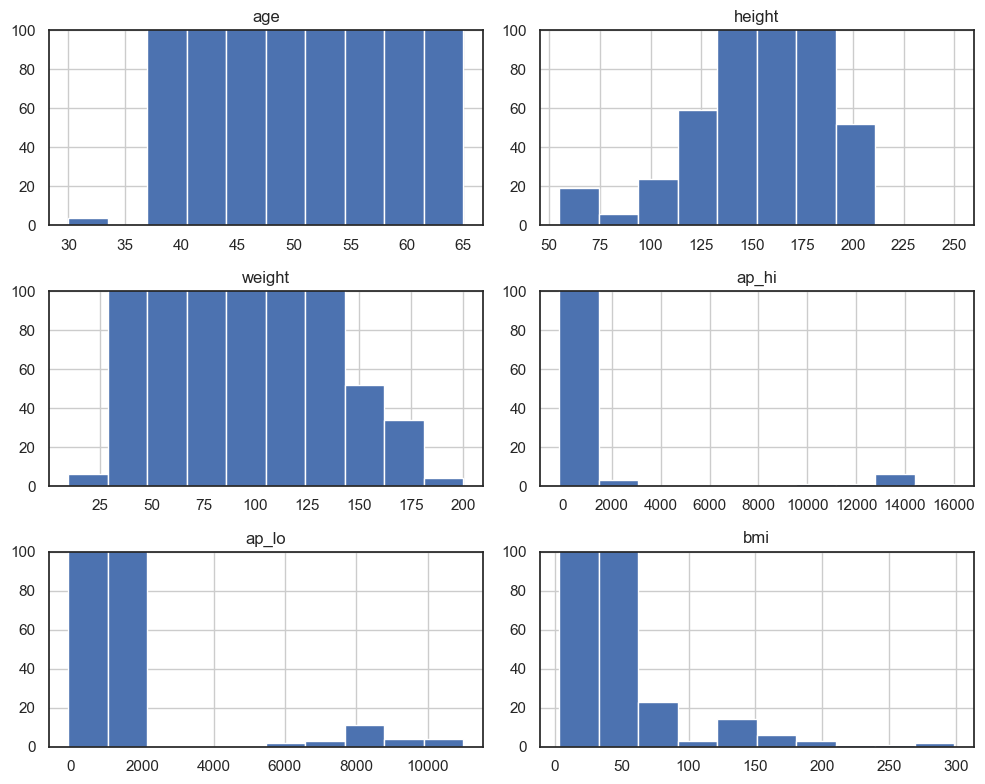
Outlier Before
It’s evident that there are numerous outliers for ap_hi, ap_lo, and bmi, where the values are significantly outside the standard range. For other variables, like weight and height, there are also some values that defy common sense. For age, we opted to retain the lower age variables, even though they are considered outliers based on the 3-Sigma rule. The subsequent visuals illustrate the distributions post-cleaning.
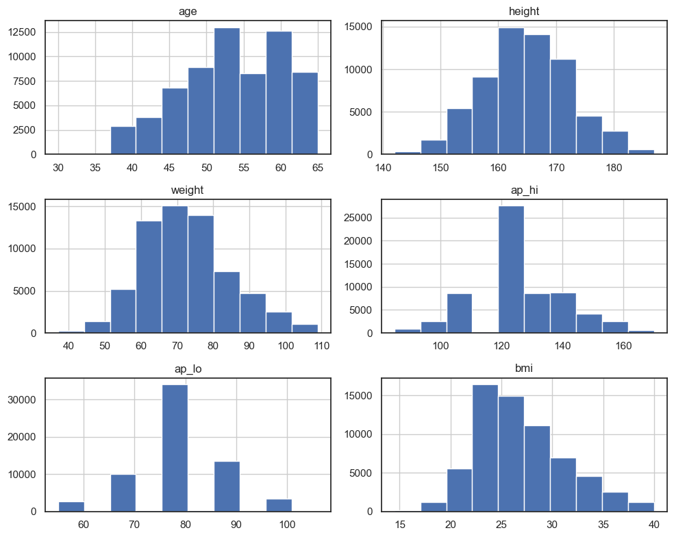
Outlier After
No outliers were detected using the 3-Sigma rule, and all the distributions appear reasonable.
Report and discuss your methods and findings
From the correlation matrix, we can identify the key features predicting cardiovascular diseases, which include ‘age,’ ‘weight,’ ‘cholesterol,’ and ‘bmi.’ These are the potential variables that will be selected during the feature selection process. However, due to the low number of features in this dataset, all the features will be considered in the future modeling processes.
All the exploratory data analysis (EDA) results align with our expectations. I am able to answer my research questions and generate hypotheses based on the relationships between different variables and the response variable ‘cardio.’ The patterns presented in the analysis are reasonable and make sense in the real world.
One of the advantages of this dataset is the large number of data records. After the outlier cleaning steps, we still have more than 60,000 records in the dataset. This ensures that the model has sufficient data for training and learning.
Tools and Software
All the codes were complied in python using ipynb file. The detailed code is also saved online in the following location.
For text data, I used the News API to retrieve text data from the server. I identified four topics: ‘Cardiovascular,’ ‘Cancer,’ ‘Stroke,’ and ‘Diabetes.’ All the text data retrieved using the ‘Cardiovascular’ topic is labeled with ‘1,’ indicating its relevance to our research goals, while data from the other topics is labeled as ‘0.’
The dataset consists of 400 records with 2 columns. One column contains the text data retrieved using the News API, and the other column contains the labels as described above. Additionally, I removed stopwords to enhance the text data modeling training process, allowing the algorithm to focus more on content words rather than function words. Below is a screenshot of the text data obtained.
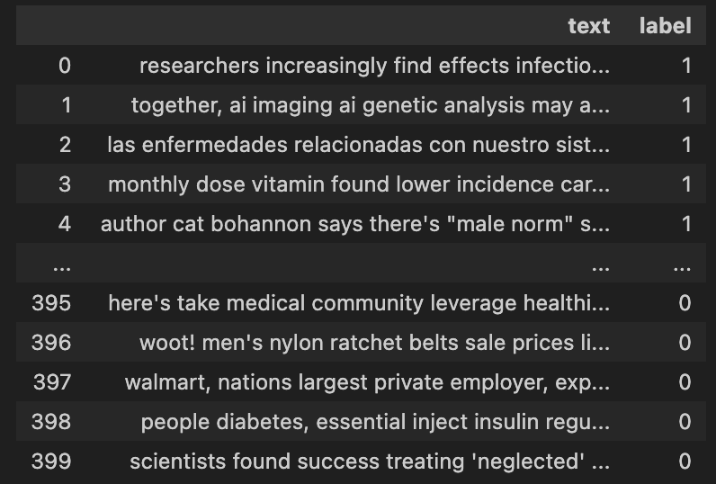
Text Data
Data Visualization
For the text data, I created two word clouds to visualize the high-frequency words in the ‘Cardiovascular’ topic and the other topics. I also generated word frequency charts to delve into further details.
There are no significant differences between the words across different topics, except for the topic words themselves. Additionally, the word frequency chart includes many Spanish words, making it challenging to identify any meaningful patterns.
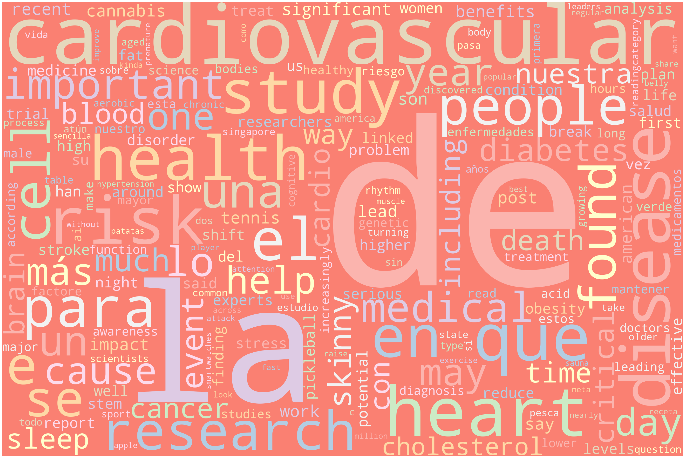
Cardio-Related
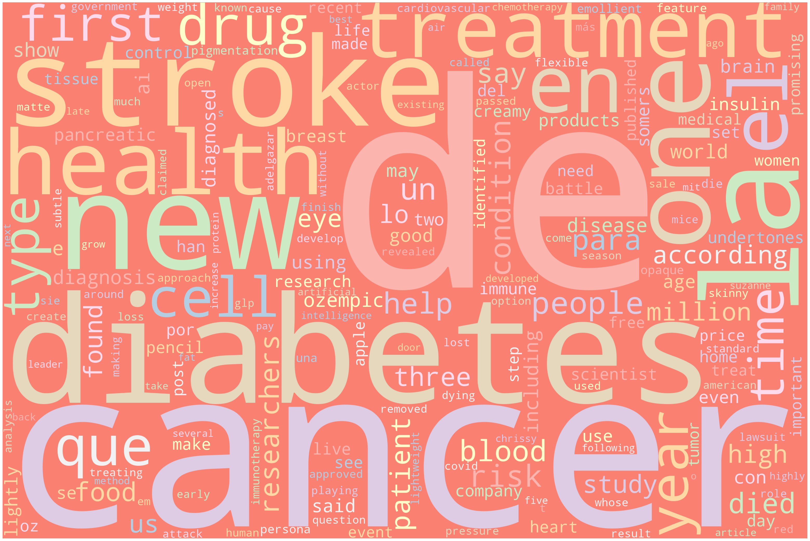
Non Cardio-Related
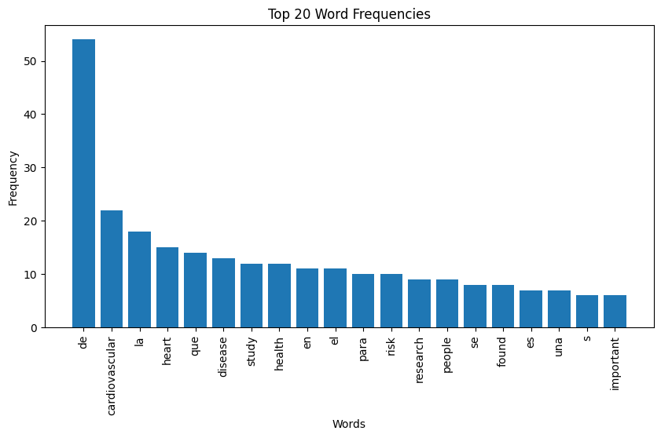
Cardio-Related
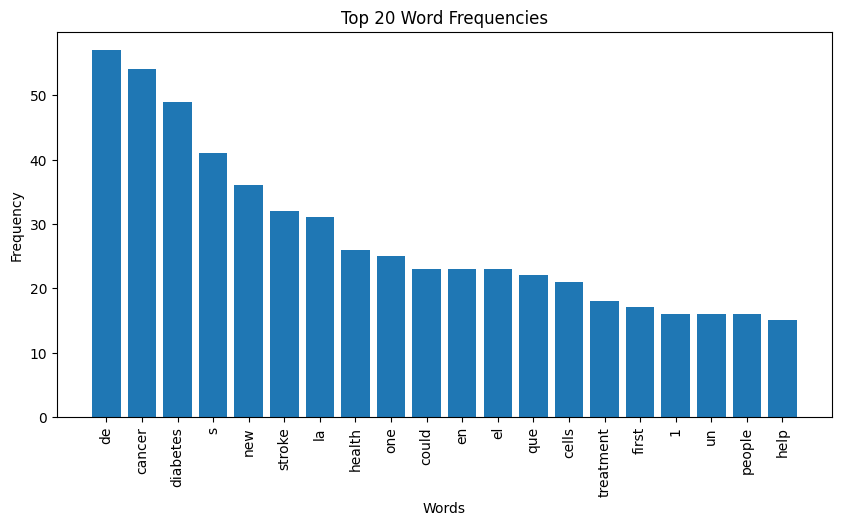
Non Cardio-Related
Report and discuss your methods and findings
In summary, when compared to record data, visualizing and identifying useful patterns in text data is much more challenging due to its unstructured nature. In the Naive Bayes process, we will explore the text data further to determine if we can gain better insights through modeling, training, and prediction results.
Tools and Software
All the codes were complied in python using ipynb file.